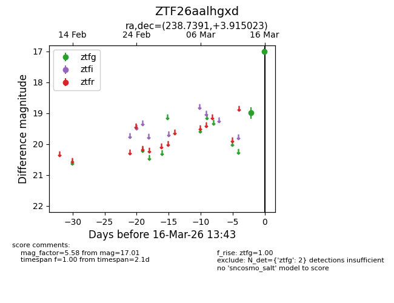
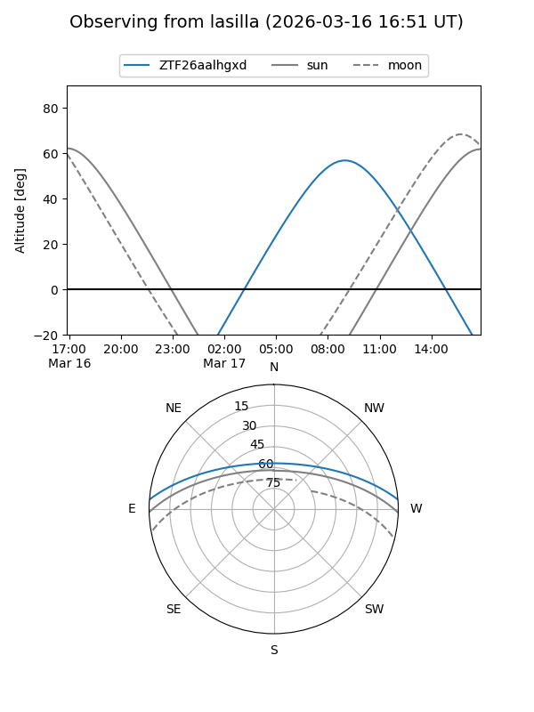
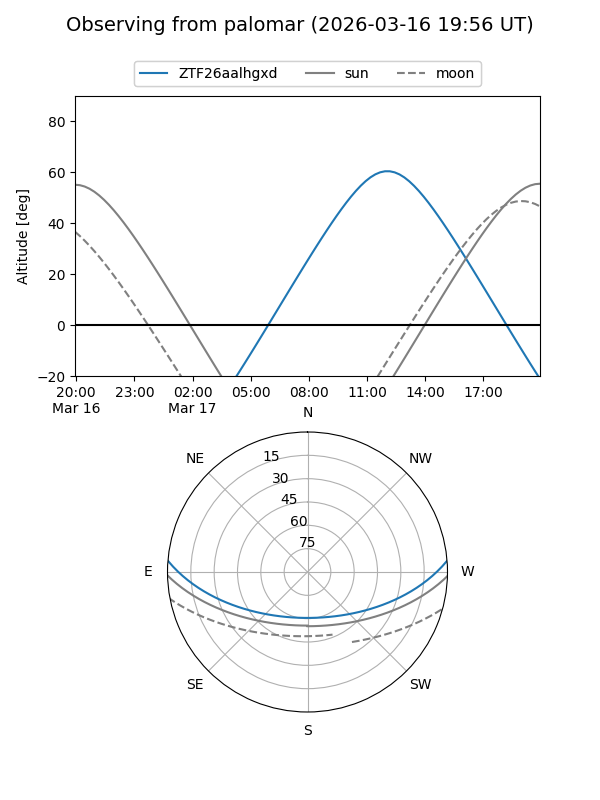

ZTF26aalhgxd
Target ZTF26aalhgxd at 2026-03-16 13:45
Aliases and brokers:
FINK: link
Lasair: link
ALeRCE: link
alt names
ZTF26aalhgxd (ztf,fink_ztf)
Coordinates:
equatorial (ra, dec) = 238.7391,+3.91502
equatorial (HMS+DMS) = 15:54:57.38,+03:54:54.08
galactic (l, b) = (13.2676,+40.48649)
Flags:
Photometry:
last ztfg=17.01
2 ztfg detections
Lightcurve

Visibility


Additional plots